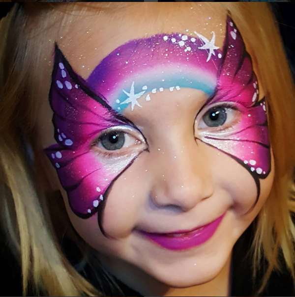
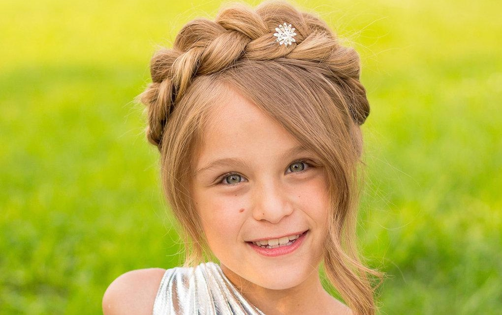
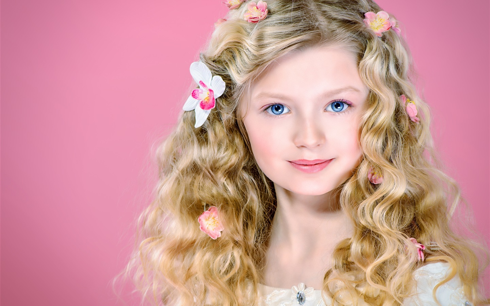
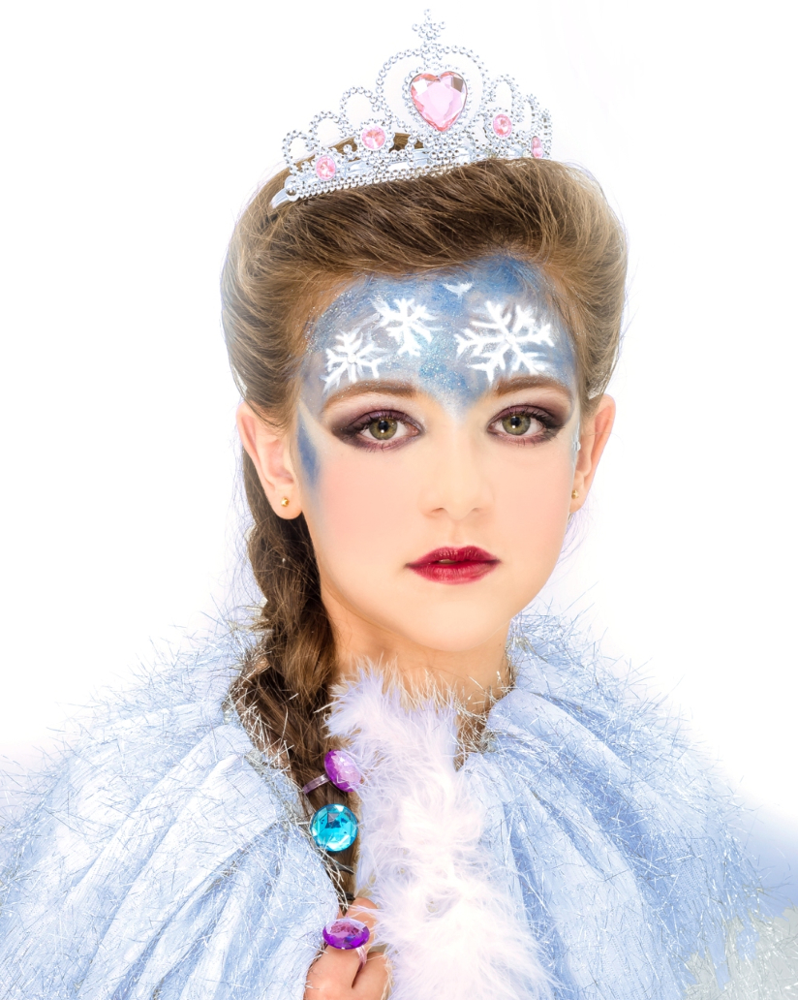
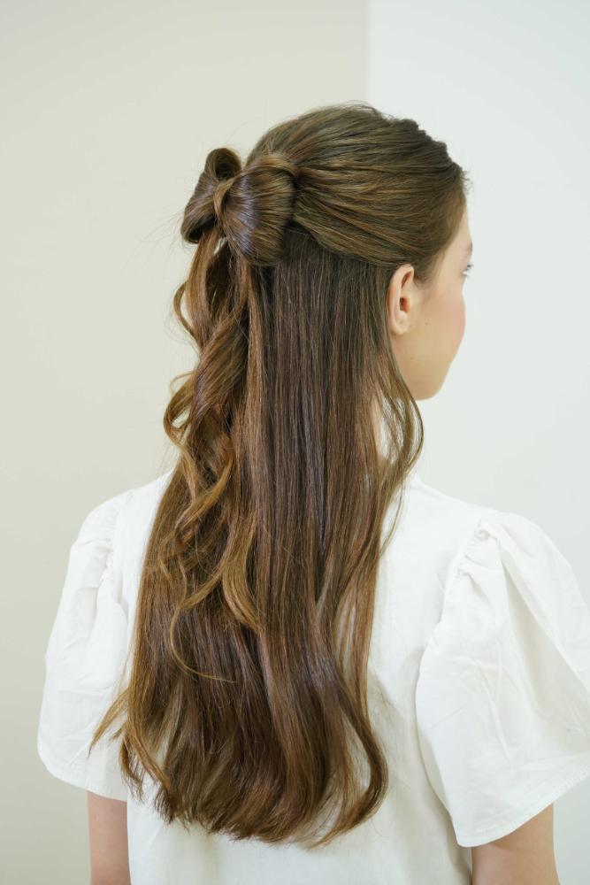
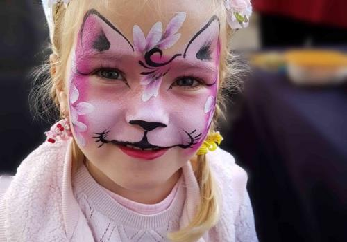

About me
שלום, אני חגי לוי, והחלטתי לבנות את האתר הראשון שלי לטובת אישתי, לכן אתייחס כאילו זהו האתר הרשמי שלה
ברוכים הבאים לאתר האיפור ותסרוקות של שנהב לוי.
מי שטרם הספיק להכיר אותי, אז הינה קצת פרטים על מי שאני
בוגרת קורס איפור ותסרוקות באקדמיה לאיפור של "ירין שחף" - מאפר העל
האיפור שלי נפרס על פני מגוון רחב של האוכלוסיה
החל בנשים בעלות תווי פנים צעירות ומבוגרות, וכלה בנשים בעלות גוון עור כהה ובהיר
האיפור מיועד הן לילדים, כגון בפורים וימי-הולדת, איפור ערב וכמובן כלות
My gallery





